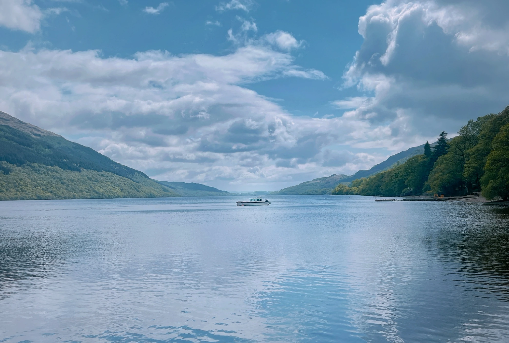
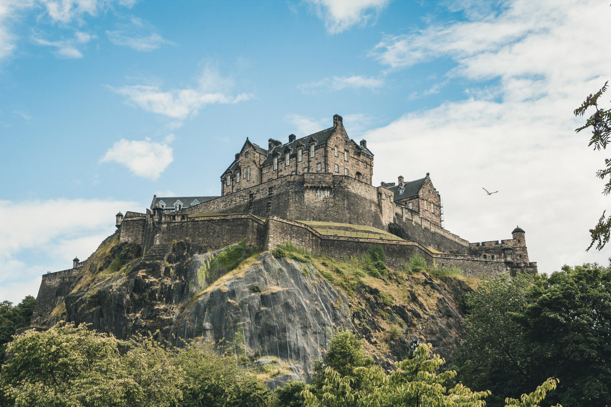

A quick introduction
If you are travelling on this departure with me as your Travel Director, this page is here as a simple welcome and a useful point of reference before we meet.
My role is to help the journey run smoothly from start to finish — keeping things organised, well paced and clearly communicated so you can relax and enjoy the experience.
Before you travel
The tour begins in Dublin and finishes in Scotland, so it is worth checking your joining information carefully and arriving with the basics well organised.
✅ Check your joining details
Make sure you know exactly where and when to be ready on the morning your tour begins in Dublin.
🛂 Keep essentials accessible
Have your passport, wallet, phone, charger and any medications easy to reach rather than buried in your suitcase.
📶 Staying connected
Most hotels offer free Wi‑Fi, and there is often limited Wi‑Fi available on the coach depending on where we are travelling. WhatsApp works well over Wi‑Fi, so you do not need to rely on mobile roaming if you would prefer not to.
✈️ Check arrival and departure plans
Because the tour begins in Dublin and finishes in Scotland, it is worth double-checking your arrival and onward travel arrangements well before Day One.
What to expect from the weather
Weather across Ireland and Scotland can change quickly, sometimes within the same day. A forecast can give a general idea, but layers and a reliable waterproof are usually the better strategy.
🌤️ A practical reality
You might get a bit of everything in one day, which is fairly normal here. A couple of flexible layers will usually serve you better than worrying too much about the forecast.
🧥 Best approach
Bring a jacket you trust and comfortable layered clothing. Conditions can shift quickly, particularly in coastal and rural areas.
🥃 “Today’s rain is tomorrow’s whisky.”
– A local favourite in both Scotland and Ireland
What to pack
Most people find they pack more than they actually use. Comfortable, practical and easy to manage tends to win every time on this tour.
Essentials
- 👟 Comfortable walking shoes
- 🧥 Layered clothing for changing conditions
- ☔ A waterproof jacket
- 🎒 A small day bag
- 💧 Optional: bring a reusable water bottle (tap water is safe throughout the tour)
- 🔌 A UK Type G plug adapter (three rectangular prongs)
- 🎧 Optional: wired headphones with a 3.5mm jack to use with our walking-tour audio devices
Packing smarter
- 🧳 You do not need to pack for a fashion shoot — think practical rather than "just in case."
- 🧳 Porterage is one main suitcase per person, so packing with that in mind helps keep travel days smooth.
- 👍 A manageable suitcase makes travel days smoother and still leaves room for a few things you may pick up along the way.
- 🌦️ Layers are key. Weather here can be a bit of a character, and it is not unusual to get a bit of everything in the same day.
Staying connected on tour
I use WhatsApp for updates, reminders and quick information throughout the tour. It is the easiest way for us to stay in touch while we are moving around, and it works perfectly over hotel or café Wi‑Fi — so there is no need to organise mobile roaming if you would prefer not to.
-
1Download WhatsApp before you travel if you do not already use it.
Download WhatsApp here - 2Set up your profile and verify your number.
- 3Save my number in your phone from the welcome email or with the links above.
- 4If you use WhatsApp, feel free to send me a quick message once you are set up. If not, no problem at all — you will still receive all key details.
Practical notes
A few small realities can make the trip feel much smoother, from timekeeping and walking to money, hotels and the rhythm of touring.
🚏 The pace of the tour
This is a 15-day journey covering Ireland, Northern Ireland and Scotland. There is a little more breathing room than a short highlights trip, but some days still involve early starts, ferries or longer travel distances.
🚶 Walking
Expect uneven streets, stairs, city walking and days where comfortable shoes matter more than style points.
🏨 Hotel styles vary
Across Ireland and Scotland we stay in a mix of modern and historic properties. Room sizes, layouts and facilities can differ from what people may be used to elsewhere.
🍽️ Included meals
Breakfast is included daily and some dinners are provided. On included meal days, timings are set to keep the itinerary running smoothly, so punctuality is appreciated.
👥 Travelling as a group
Touring works best when everyone is mindful of shared timings, shared spaces and different travel styles. A relaxed and respectful group dynamic makes the journey more enjoyable for all.
🧑✈️ Your Driver
Your Driver plays a key role in both safety and the smooth running of the itinerary. Driving hours are legally regulated, which influences daily scheduling and comfort stops.
💷 Currency
Ireland uses the Euro (€). Northern Ireland and Scotland use Pounds Sterling (£).
💳 Money & payments
Card payments are widely accepted throughout the UK and Ireland, though having a small amount of local cash can still be useful from time to time.
The easiest way to access cash is usually through an ATM or cash machine rather than a currency exchange counter, which can be harder to find outside major airports.
Optional experiences can be paid by card or cash.
🚻 Toilets
Some public facilities may require coins or small payment, so keeping a little cash handy can occasionally help.
💶 Gratuities
Many service gratuities are already covered in your tour. Tips for your Travel Director and Driver are generally separate unless pre-paid.
🔒 Security
Keep passports, cards and valuables secure and stay aware in busy areas. Pickpocketing is not common, but sensible awareness is always advisable in busy areas.
⭐ Optional experiences
Your itinerary already includes a strong balance of included experiences. Optional experiences are additional activities designed to give you the chance to explore certain places more deeply or enjoy unique local evenings.
These are introduced during the tour once timings, logistics and conditions are clearer. Participation is always entirely optional.
On the coach
The coach will be our moving base between destinations. A few simple habits help keep things comfortable, safe and pleasant for everyone travelling together.
- 🔁 Seat rotation happens daily. I will explain the system clearly on Day One.
- 🚻 There is often a WC on board, and we also plan regular comfort stops along the way.
- ⛴️ Some departures may include ferry crossings, so it helps to keep a layer and anything essential in your day bag rather than packed in your suitcase.
- 🥪 Snacks are absolutely fine. For general comfort and safety on a moving vehicle, it’s best to avoid hot food and hot drinks while on the coach.
- ☕ Hot drinks such as coffee don’t travel particularly well — we are aiming for sightseeing, not seat‑drying.
- 🎒 Bring a small day bag with what you need for the day rather than accessing your main suitcase at every stop.
- 🎒 Carry-on space on the coach is limited. Smaller soft bags such as backpacks or tote-style bags work best overhead or under the seat. Wheel-based carry-on suitcases usually do not fit well in the racks above. They are best avoided as on-board bags.
- 🧳 Main suitcases are stored in the luggage hold on the coach. On travel days they are not accessible until hotel arrival, so please keep anything you may need during the day in your smaller carry-on bag.
- 🔔 Seatbelts must be worn while the coach is moving. It is both a legal requirement and simply good practice.
- 🧼 Please be mindful of general hygiene. Clean hands and common sense go a long way when travelling in a shared space, and if you are feeling unwell, please let me know so we can manage things sensibly.
Trip talk
Tour wording can sometimes sound unfamiliar at first, so here is a simple guide to what it usually means in practice.
| Term | What it usually means |
|---|---|
| See | Observe sights while passing by on your coach, ferry or other travel segment. |
| View | A brief stop to enjoy the sight and perhaps take a few photos. |
| Visit | A stop with time dedicated to the site itself rather than simply passing it. |
| Orientation | A short introduction to help you get your bearings before free time. |
| Sightseeing | Usually a more structured visit, often with a Local Specialist or more detailed destination commentary. |
Important contact details
Save these now rather than trying to find them again when travel is already underway.
Joel Plunkett
+44 7496 055 950
joelrplunkett@gmail.com
@tourwithjoel
tourwithjoel.com
Questions before the tour?
Before the tour begins, I may not always be able to reply immediately, but I will read messages as I can. Once the tour is underway, I will keep everyone informed and respond whenever I reasonably can.
For anything that needs immediate attention before Day 1, please contact European Guest Services using the details below.
+44 207 620 8900
For peace of mind, save my number now and keep your official joining instructions somewhere easy to find before departure.
Final note
If you are ever unsure about anything, just ask. Arriving prepared and packing sensibly tends to make the whole journey feel easier from the start.
Looking forward to welcoming you and getting the journey underway.
Over the years I’ve encountered most touring situations, and I’m here to help you feel relaxed, informed and ready to enjoy the journey.